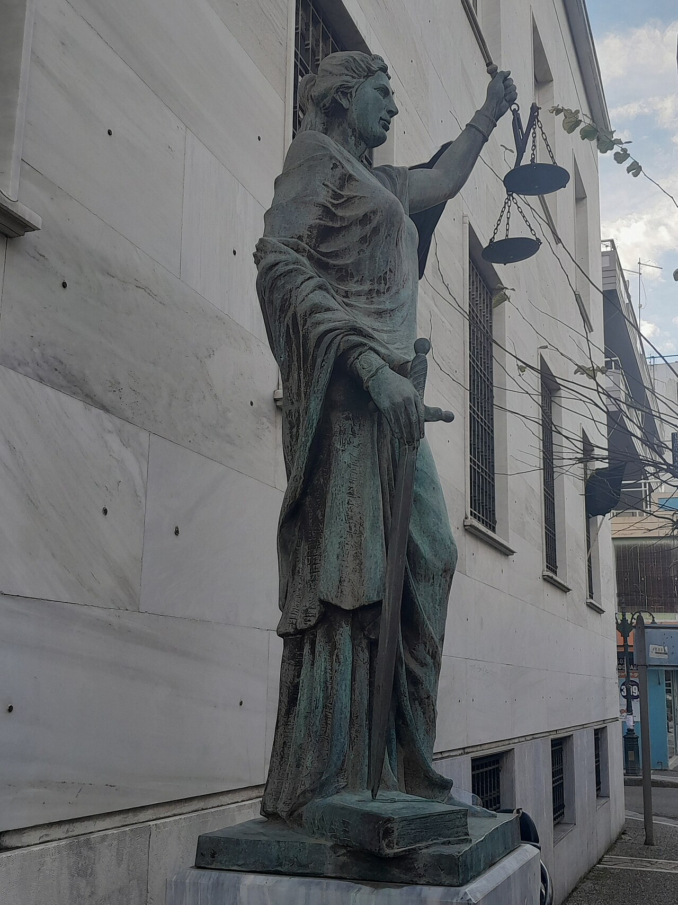
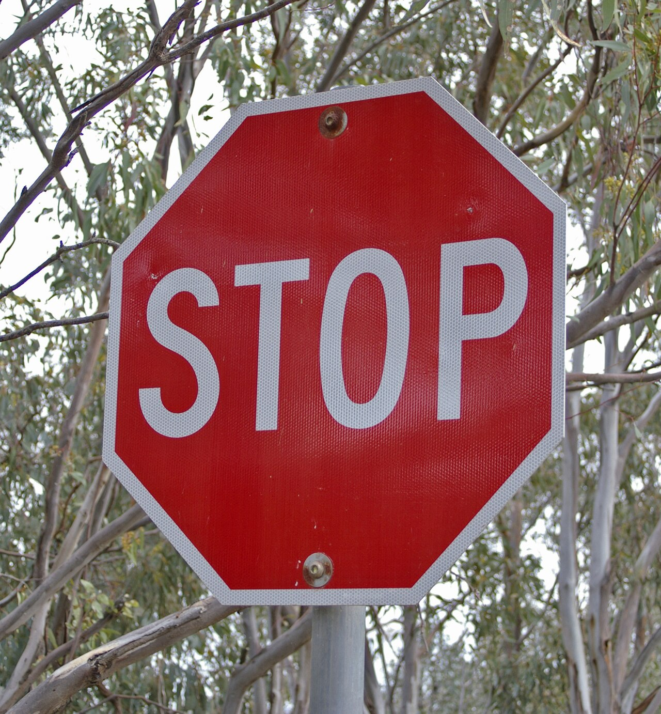
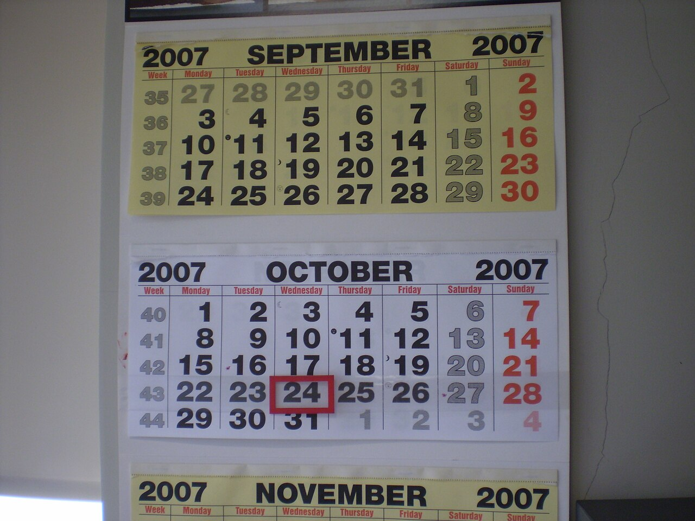
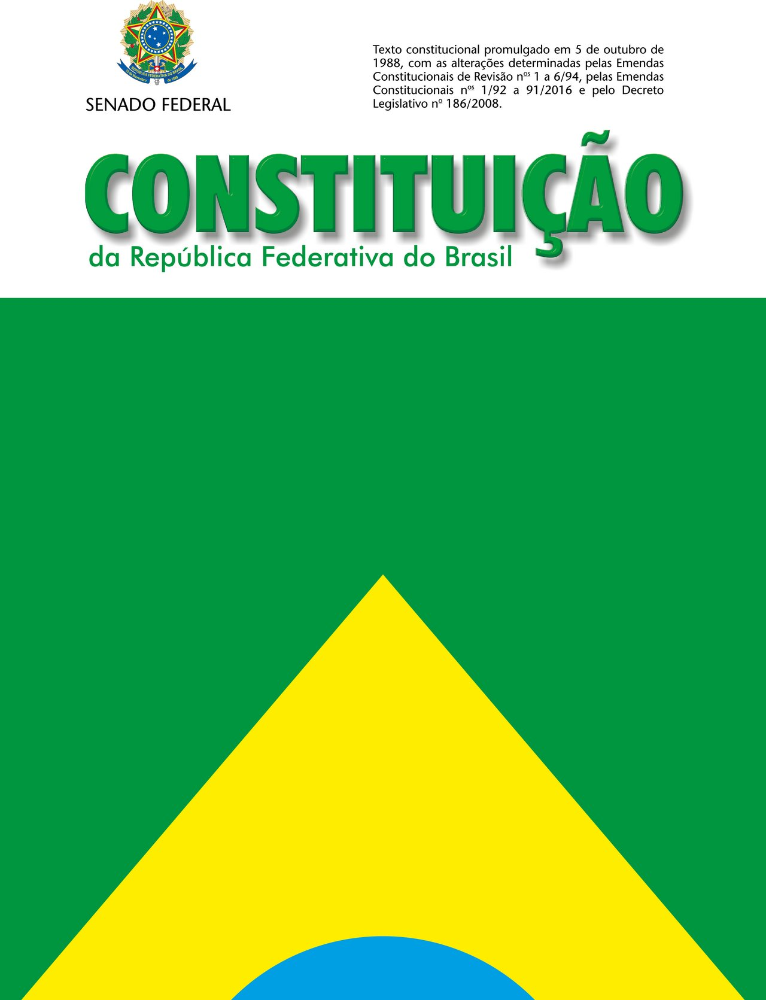

Os dez conceitos que a prova cobra: o que cada um diz, como ele aparece num caso e como responder.
* Material elaborado com apoio de Inteligência Artificial Generativa — Claude (Anthropic) — para estruturação das lâminas e redação das questões simuladas. Fontes conferidas e responsabilidade integral do professor.
UniFamec — Administração — 2º semestre — Prof. Mario Bastos — aula de 18/11/2026.
Revisão · combinadosalvo 18:32
Antes de começar
Como é a prova
Quarta-feira, 02/12
No nosso horário, 18:30 às 20:10. Individual, sem consulta, valendo 8,0.
Cai tudo o que estudamos
Módulos 1B, 1D, 2, 3 e 4. Os Módulos 1A e 1C não caem.
Dez questões
Sete objetivas, com quatro alternativas e uma só certa. Três discursivas, de poucas linhas.
Regra de hoje: vocês respondem primeiro, discutimos depois, e só então aparece o gabarito. Errar aqui é de graça.
Revisão · esquemaalvo 18:34
Esquema
O caminho de hoje acompanha a prova
Bloco
O que se revisa
1 a 3 · conceitos
Norma jurídica · vigência da lei · pessoa jurídica
4 a 7 · aplicação
Estado, governo e Administração · hierarquia das normas · legalidade · Administração Direta e Indireta
8 a 10 · discursivas
Relação jurídica · poder de polícia · ordem ilegal na Administração
Em cada bloco
O conceito, o desenvolvimento, a ideia para levar e uma questão simulada parecida com a da prova — sem ser igual
1 · Norma jurídicaalvo 18:37

Deiadameian · CC BY-SA 4.0 · Wikimedia Commons
Questão 1 · Módulo 1B
Norma jurídica: a regra que o Estado garante
O Estado reconhece: ela pertence ao sistema jurídico, posta por quem podia e do jeito devido.
Obriga sem concordância: vale para quem concorda e para quem discorda.
Descumprida, gera consequência exigível: alguém pode cobrá-la, e a autoridade pode impô-la.
1 · Norma jurídicaalvo 18:39
Desenvolvimento
Regra social e norma jurídica, lado a lado
Critério
Regra social ou moral
Norma jurídica
Vale por quê
Pela adesão de quem a aceita
Pela imposição do Estado, queira-se ou não
Quantos lados
Olha só para quem age
Bilateral: cria o dever de um e o poder de exigir de outro
Se descumprida
Reprovação, constrangimento
Sanção organizada: multa, interdição, execução
Quem cobra
O grupo, informalmente
A autoridade pública, com base em norma
Exemplo
Respeitar a fila, cumprimentar o cliente
Exigência sanitária, recolhimento de tributo
Martins (2006): a moral é unilateral e autônoma; o Direito, bilateral e heterônomo.
1 · Norma jurídicaalvo 18:41

Bidgee · CC BY 3.0 · Wikimedia Commons
Para levar
A pergunta que resolve
Se eu descumprir, alguém pode exigir o cumprimento com base em norma do Estado?
Se sim, é norma jurídica. E discordar dela não dispensa de cumpri-la: "eu não concordo" nunca foi defesa.
1 · Norma jurídicaalvo 18:43
Questão simulada 1
Qual das duas é norma jurídica?
Numa empresa, há dois hábitos. I. Os colegas costumam levar bolo no aniversário de quem faz anos. II. A empresa mantém o alvará de funcionamento exigido por lei municipal, sob pena de multa e interdição.
A. As duas, porque ambas são seguidas por todos na empresa há muito tempo.
B. Só a II, porque obriga sem concordância e a autoridade pode cobrá-la.
C. Só a I, porque nasceu da vontade dos próprios colegas de trabalho dela.
D. Nenhuma, porque as duas dependem da concordância de quem as cumpre.
Toque na questão para ver o gabarito.
Gabarito: B. A Ser seguida por todos não torna a regra jurídica. C Nascer da vontade do grupo é traço da regra social. D A II obriga mesmo contra a vontade.
2 · Vigência da leialvo 18:45
Samuel Loxton (artist) · Public domain · Wikimedia Commons
Questão 2 · Módulo 2
Publicada não é o mesmo que valendo
"Salvo disposição contrária, a lei começa a vigorar em todo o país quarenta e cinco dias depois de oficialmente publicada." (LINDB, art. 1º)
Vacância: o intervalo entre a publicação e a entrada em vigor, para que todos se preparem.
"Salvo disposição contrária": se a própria lei fixar a data, vale a data dela.
2 · Vigência da leialvo 18:48
Desenvolvimento
Os três momentos de uma lei, e o que a empresa faz em cada um
Momento
O que já aconteceu
O que a empresa faz
Projeto em tramitação
Nada obriga ainda
Acompanha e, se for o caso, participa da discussão
Lei publicada
Existe, mas pode ainda não obrigar
Lê a cláusula de vigência e planeja a adequação
Lei em vigor
Obriga a todos
Está adequada: ninguém se escusa alegando que não a conhece
2 · Vigência da leialvo 18:50

Claudio Elias · Public domain · Wikimedia Commons
Para levar
Duas perguntas, nesta ordem
1. A lei diz quando entra em vigor? Então vale a data dela. 2. Não diz? Quarenta e cinco dias depois da publicação oficial.
A vigência não depende de fiscal, de aviso à empresa nem de regulamento: conta-se da publicação oficial.
2 · Vigência da leialvo 18:52
Questão simulada 2
A partir de quando a lei obriga?
Uma lei federal sobre embalagens de alimentos foi publicada no Diário Oficial da União. O último artigo diz: "Esta Lei entra em vigor na data de sua publicação." A gerente acha que tem quarenta e cinco dias para se adequar.
A. Daqui a quarenta e cinco dias, porque esse é sempre o prazo para qualquer lei.
B. Só depois que o fiscal visitar a empresa e entregar uma notificação formal.
C. Desde a publicação, porque a própria lei fixou a data em que entra em vigor.
D. Só depois que um decreto regulamentar a lei e explicar como cumpri-la.
Toque na questão para ver o gabarito.
Gabarito: C. Os quarenta e cinco dias valem "salvo disposição contrária" — e aqui há disposição contrária. A Ignora a ressalva da LINDB. B e D A vigência não depende de fiscal nem de regulamento.
3 · Pessoa jurídicaalvo 18:54
Amuzujoe · CC BY-SA 4.0 · Wikimedia Commons
Questão 3 · Módulo 2
A sociedade é alguém distinto dos sócios
Nasce com o registro do ato constitutivo — o contrato social, na sociedade limitada.
Tem patrimônio próprio: o da sociedade responde pelas dívidas dela; o dos sócios, pelas deles.
Age por pessoas físicas, dentro de limites: "Obrigam a pessoa jurídica os atos dos administradores, exercidos nos limites de seus poderes definidos no ato constitutivo." (Código Civil, art. 47)
3 · Pessoa jurídicaalvo 18:57
Desenvolvimento
Até onde vai o que o sócio arrisca
Tipo
O que o sócio arrisca
Onde está
Sociedade limitada
O valor das suas quotas; e, enquanto o capital não estiver todo integralizado, solidariamente o que falta
Código Civil, art. 1.052
Sociedade anônima
O preço de emissão das ações que subscreveu ou adquiriu
Código Civil, art. 1.088
Sociedade em nome coletivo
Todo o patrimônio pessoal, solidariamente
Código Civil, art. 1.039
Sociedade sem registro
Todo o patrimônio pessoal, solidariamente
Código Civil, art. 990
Quando a proteção cai: havendo abuso — desvio de finalidade ou confusão patrimonial —, o juiz pode desconsiderar a personalidade jurídica e alcançar quem se beneficiou (Código Civil, art. 50).
3 · Pessoa jurídicaalvo 18:59
rawpixel.com · CC0 · Wikimedia Commons
Para levar
Contrato dentro dos poderes, dívida da sociedade
Na limitada com capital integralizado, a dívida contraída pelo administrador dentro dos seus poderes é da sociedade — e só dela.
Não deve quem assinou por ela, nem os sócios por serem donos. A resposta muda se houver excesso de poderes, capital não integralizado ou uso da empresa como escudo.
3 · Pessoa jurídicaalvo 19:01
Questão simulada 3
O fornecedor pode penhorar a casa da sócia?
A Padaria Trigo Fino Ltda., sociedade limitada com capital integralizado, comprou um forno industrial em dez parcelas. Assinou a administradora, com poderes no contrato social. As parcelas atrasaram, e o fornecedor quer penhorar a casa de uma das sócias.
A. Não: a dívida é da sociedade; na limitada, a sócia arrisca só suas quotas.
B. Sim: na sociedade limitada, os sócios respondem com todo o patrimônio pessoal.
C. Sim: a sócia responde porque a administradora agiu em nome da sociedade.
D. Não: como a sociedade não tem dinheiro, a dívida deixa de existir para todos.
Toque na questão para ver o gabarito.
Gabarito: A. B Descreve a sociedade em nome coletivo, não a limitada. C Agir pela sociedade obriga a sociedade, não os sócios. D A dívida continua a existir; quem responde é a sociedade.
4 · Estado, governo e Administraçãoalvo 19:03
Senado Federal · CC BY 2.0 · Wikimedia Commons
Questão 4 · Módulo 3
Três palavras que não se misturam
Estado: a organização de um povo, num território, sob um poder soberano (Nucci, 2019). Permanente.
Governo: o grupo que exerce o poder político por um período, com um programa. Muda a cada eleição.
Administração Pública: a máquina de órgãos, entidades e servidores que executa. É permanente e serve a todo e qualquer governo.
4 · Estado, governo e Administraçãoalvo 19:05
Desenvolvimento
Estado, governo e Administração, critério por critério
Critério
Estado
Governo
Administração Pública
Duração
Permanente
Dura o mandato
Permanente, na estrutura
Muda com a eleição?
Não
Sim
Não; mudam os ocupantes dos cargos de confiança
Quem compõe
Povo, território, soberania
Eleitos e auxiliares de confiança
Concursados, comissionados (livre nomeação) e terceirizados ao redor
O que faz
Decide por último no território
Fixa o rumo e as prioridades
Executa e aplica a lei, caso a caso
A que se vincula
À Constituição
Ao programa, nos limites da lei
À lei: só faz o que ela prevê
Cargo em comissão é de livre nomeação e exoneração (Constituição, art. 37, II) e serve à direção, chefia e assessoramento (art. 37, V). Ter cargos assim não tira da Administração o caráter permanente.
4 · Estado, governo e Administraçãoalvo 19:08
TSE - Tribunal Superior Eleitoral · Public domain · Wikimedia Commons
Para levar
A eleição troca o governo, não a máquina
O novo governo troca quem dirige — secretários, diretores, assessores de confiança. Não desfaz o quadro de carreira, nem os órgãos, nem os deveres legais.
Para a empresa: contrato, processo e exigência legal continuam valendo no dia seguinte à posse.
4 · Estado, governo e Administraçãoalvo 19:10
Questão simulada 4
O que está errado na afirmação do secretário?
Recém-nomeado, o secretário municipal de Fazenda diz a um contador: "os pedidos de parcelamento protocolados na gestão passada morreram com o governo passado; protocolem tudo de novo".
A. Ele confunde Estado com município, que é só uma parte do território nacional.
B. Ele confunde a Administração com o Judiciário, que é quem decide os pedidos.
C. Nada está errado: cada governo pode descartar o que a gestão anterior recebeu.
D. Ele confunde governo com Administração, que é permanente e segue com tudo.
Toque na questão para ver o gabarito.
Gabarito: D. Os pedidos foram feitos à Administração, que não muda com a eleição. A Não é a distinção em jogo. B Pedido administrativo é decidido pela própria Administração. C É exatamente a confusão que a questão aponta.
5 · Hierarquia das normasalvo 19:12
Jules Verne Times Two · CC BY-SA 4.0 · Wikimedia Commons
Questão 5 · Módulo 3
Cada norma se apoia na de cima
As normas constitucionais são "dotadas de máxima hierarquia dentro do sistema" — Barroso (apud Nucci, 2019).
Abaixo da Constituição, as leis votadas pelo Legislativo.
Abaixo das leis, os atos que as detalham: decreto, portaria, instrução normativa.
Norma de baixo que contraria a de cima não se aplica.
5 · Hierarquia das normasalvo 19:14
Desenvolvimento
Os atos abaixo da lei: para que servem
Ato
Quem edita
Para quê
Decreto regulamentar
Chefe do Executivo
Dar execução à lei, sem criar obrigação que ela não previu
Portaria
Ministro, secretário, dirigente
Organizar o serviço e detalhar procedimento
Instrução normativa
Órgão técnico, agência
Fixar o modo de cumprir uma exigência legal
O teste: o ato cria um dever novo? Então extrapolou. Ser mais novo, vir do prefeito ou já estar publicado não muda isso.
5 · Hierarquia das normasalvo 19:16
Emerson Júnior GSF · CC BY-SA 4.0 · Wikimedia Commons
Para levar
Quem cria obrigação é a lei
A obrigação nasce da lei, votada pelo Legislativo. O decreto e a portaria executam e detalham — não inventam dever.
Cuidado com o critério cronológico: "a mais nova prevalece" só vale entre normas do mesmo nível. Entre níveis, decide a hierarquia.
5 · Hierarquia das normasalvo 19:19
Questão simulada 5
A portaria obriga as farmácias?
Uma lei municipal exige que as farmácias afixem a tabela de preços na entrada. Uma portaria do secretário de Saúde, publicada depois, obriga também as farmácias a abrir aos domingos — exigência que a lei não faz.
A. Obriga, porque a portaria tem a mesma força da lei que ela detalha.
B. Não obriga, porque a portaria não pode criar dever que a lei não criou.
C. Obriga, porque foi publicada depois da lei e por isso prevalece sobre ela.
D. Obriga apenas as farmácias que concordarem em abrir aos domingos.
Toque na questão para ver o gabarito.
Gabarito: B. A Portaria está abaixo da lei. C O critério cronológico não vale entre níveis diferentes. D Norma válida não depende de concordância; aqui, o problema é que a portaria não podia criar o dever.
6 · Princípio da legalidadealvo 19:21

Brazilian Government (text), Cosme Rocha (cover) · Public domain · Wikimedia Commons
Questão 6 · Módulo 4
A legalidade inverte a lógica do mundo privado
"A administração pública direta e indireta (...) obedecerá aos princípios de legalidade, impessoalidade, moralidade, publicidade e eficiência" (Constituição, art. 37).
O particular pode fazer tudo o que a lei não proíbe.
A Administração só pode fazer o que a lei prevê (Oliveira; Costa, 2016).
6 · Princípio da legalidadealvo 19:23
Desenvolvimento
O teste LIMPE: uma pergunta por princípio
Princípio
A pergunta
Violação típica
Legalidade
Em que lei se funda?
Exigir documento que nenhuma norma prevê
Impessoalidade
O critério foi o mesmo para quem está na mesma situação?
Dispensar um concorrente e exigir do outro
Moralidade
Houve desvio para proveito particular?
Usar o cargo para favorecer um parente
Publicidade
O ato foi publicado e motivado?
Excluir sem divulgar o motivo nem o prazo de recurso
Eficiência
O meio era adequado ao resultado?
Demora injustificada, desperdício
6 · Princípio da legalidadealvo 19:25
Dvortygirl · CC BY 4.0 · Wikimedia Commons
Para levar
"Sempre foi assim" não é fundamento
Diante de qualquer exigência, a pergunta é uma só: qual norma a fundamenta?
Sem norma, não há dever. O caminho é pedir, por escrito, a indicação da norma — o pedido documentado é a primeira peça de qualquer recurso.
6 · Princípio da legalidadealvo 19:27
Questão simulada 6
Qual princípio a exigência contraria?
No protocolo da prefeitura, o servidor se recusa a receber o requerimento de uma empresa sem firma reconhecida em cartório. Nenhuma lei ou regulamento exige isso. Questionado, ele responde: "é norma da casa".
A. Legalidade, porque a Administração só pode exigir aquilo que a lei prevê.
B. Publicidade, porque a exigência não foi divulgada antes no Diário Oficial.
C. Impessoalidade, porque o servidor tratou a empresa de forma diferente.
D. Eficiência, porque reconhecer firma deixa o atendimento mais demorado.
Toque na questão para ver o gabarito.
Gabarito: A. "Norma da casa" não é norma. B Publicar a exigência não a tornaria válida. C Nada indica tratamento desigual. D O defeito não é a demora, é a falta de lei.
7 · Administração Direta e Indiretaalvo 19:30
Senado Federal · CC BY 2.0 · Wikimedia Commons
Questão 7 · Módulo 4
Órgão ou entidade: quem responde
Administração Direta: órgãos — ministérios, secretarias — sem personalidade jurídica própria. Quem responde é o ente: União, Estado, Município.
Administração Indireta: entidades com personalidade jurídica própria, que contratam e respondem em nome próprio (Oliveira; Costa, 2016).
A autarquia é uma delas: pessoa jurídica de direito público, criada por lei.
7 · Administração Direta e Indiretaalvo 19:32
Desenvolvimento
Com quem a empresa contratou, e contra quem cobra
Contratou com
O que é
Contra quem cobrar
Secretaria municipal
Órgão da Administração Direta
O Município
Autarquia
Pessoa jurídica de direito público; a lei a cria
A própria autarquia
Empresa pública
Pessoa jurídica de direito privado, capital estatal; a lei autoriza
A própria empresa pública
Sociedade de economia mista
Pessoa jurídica de direito privado, S.A., capital misto; a lei autoriza
A própria sociedade
A secretaria que supervisiona uma autarquia não responde pelas dívidas dela: supervisão não é hierarquia.
7 · Administração Direta e Indiretaalvo 19:34
Igor Bonfioli · CC0 · Wikimedia Commons
Para levar
Órgão, cobra-se o ente; entidade, cobra-se ela mesma
Antes de cobrar, pergunte: com quem eu contratei tem personalidade jurídica própria?
Secretaria, departamento, coordenadoria: são órgãos — responde o ente. Autarquia, fundação, empresa pública, sociedade de economia mista: respondem por si.
7 · Administração Direta e Indiretaalvo 19:36
Questão simulada 7
Contra quem a editora deve cobrar?
Uma editora vendeu livros didáticos para a Secretaria Municipal de Educação e emitiu a nota em nome dela. O pagamento não veio, e a editora quer saber contra quem cobrar.
A. Contra a própria secretaria, que tem personalidade jurídica e contratou por si.
B. Contra o secretário de Educação, que é quem chefia a secretaria municipal.
C. Contra o Município, porque a secretaria é órgão sem personalidade própria.
D. Contra uma autarquia, porque toda secretaria é uma entidade descentralizada.
Toque na questão para ver o gabarito.
Gabarito: C. Secretaria é órgão da Administração Direta. A Órgão não tem personalidade própria. B O secretário não é parte do contrato. D Secretaria resulta de desconcentração, não de descentralização.
Discursivas · como responderalvo 19:38
Questões 8, 9 e 10
As discursivas: como escrever a resposta
1. Nomeie o conceito
Diga de que se trata: relação jurídica, poder de polícia, legalidade. É o nome que mostra que você reconheceu o caso.
2. Aplique ao caso
Use os nomes e os fatos da situação. Não basta definir: mostre onde o conceito aparece ali.
3. Decida e diga a consequência
Responda o que a pessoa deve fazer e o que acontece se fizer diferente.
Siga as perguntas do enunciado, na ordem, uma frase para cada. Não se exige número de artigo: exige-se o nome certo e o raciocínio.
8 · Relação jurídicaalvo 19:41
Amancio do Compromisso · CC BY-SA 4.0 · Wikimedia Commons
Questão 8 · Módulo 2
Toda relação jurídica tem duas pontas
Relação jurídica: vínculo entre pessoas, regulado pelo Direito, em que uma pode exigir da outra uma conduta (Martins, 2006).
Polo ativo: quem pode exigir. Polo passivo: quem deve prestar.
No contrato, as duas partes ocupam os dois polos ao mesmo tempo: cada uma deve algo e pode exigir algo.
8 · Relação jurídicaalvo 19:43
Desenvolvimento
O vocabulário que a resposta usa
Posição
Pergunta que responde
No aluguel de uma loja
Direito subjetivo
O que eu posso exigir?
O locatário pode exigir o uso do espaço
Dever jurídico
O que eu devo prestar?
O locatário deve pagar o aluguel no prazo
Pretensão
O que posso exigir quando o dever é descumprido?
A cobrança do aluguel atrasado
Responsabilidade
Em que posição caio quando violo um dever?
Reparar o dano causado à outra parte
8 · Relação jurídicaalvo 19:45
Blogtrepreneur · CC BY 2.0 · Wikimedia Commons
Para levar
Quem deve, e quem pode exigir
Numa resposta sobre relação jurídica, diga quem são as partes e, para cada uma, o que deve e o que pode exigir.
Direito subjetivo e dever jurídico são as duas faces da mesma moeda: não existe um sem o outro.
8 · Relação jurídicaalvo 19:47
Questão simulada 8
Qual afirmação descreve a relação?
A Gráfica Ponto Certo imprime, todo mês, os panfletos da Academia Movimento. A academia paga o valor combinado até o dia 10.
A. Só a academia tem direitos; a gráfica tem apenas o dever de imprimir.
B. Só a gráfica tem direitos, porque é ela quem presta o serviço contratado.
C. Não há relação jurídica, porque as duas são empresas privadas comuns.
D. Cada parte deve e pode exigir algo: imprimir e cobrar; pagar e receber.
Toque na questão para ver o gabarito.
Gabarito: D. No contrato, as duas ocupam os dois polos. A e B Enxergam só um lado da moeda. C Relação jurídica não depende de haver o Estado de um dos lados.
9 · Poder de políciaalvo 19:50
Tony Webster from Minneapolis, Minnesota, United States · CC BY 2.0 · Wikimedia Commons
Questão 9 · Módulo 4
Poder de polícia: limitar, com base na lei
O que é: a atividade administrativa que limita a liberdade e a propriedade dos particulares para satisfazer o interesse público, com base na lei (Oliveira; Costa, 2016).
Exemplos: fiscalização sanitária, embargo de obra, interdição, exigência de alvará.
O limite: o fiscal exige o que a norma manda exigir, e nada além.
9 · Poder de políciaalvo 19:52
Desenvolvimento
O que o fiscal pode, o que não pode, e o que a empresa faz
O fiscal pode
O fiscal não pode
A empresa faz
Exigir o que a norma prevê e aplicar a sanção prevista
Exigir o que nenhuma norma prevê, ainda que "para ficar melhor"
Cumpre o que tem base na norma e pede, por escrito, a norma do resto
Interditar, quando a norma autoriza, sem ordem judicial prévia
Escolher sanção que a norma não prevê para aquele caso
Documenta a visita: fotos, termo, nome do fiscal
9 · Poder de políciaalvo 19:54
Questão simulada 9
A loja é obrigada a pintar a fachada?
O fiscal de posturas notifica uma loja porque a calçada está obstruída por mercadorias, o que a lei municipal proíbe. Na mesma visita, "sugere" que a loja pinte a fachada de outra cor, sem indicar norma que exija isso.
A. É obrigada às duas coisas, porque o poder de polícia não tem limites.
B. A notificação vale; a pintura não obriga, pois não tem base em norma.
C. Nenhuma das duas vale, porque fiscalização depende de ordem judicial.
D. Só a pintura obriga, porque foi o próprio fiscal quem a determinou.
Toque na questão para ver o gabarito.
Gabarito: B. O poder de polícia se exerce com base na lei. A Ele é amplo, mas não é livre. C A fiscalização não depende de ordem judicial prévia. D A vontade do fiscal não cria dever.
10 · Ordem ilegalalvo 19:56
JESHOOTS.COM jeshoots · CC0 · Wikimedia Commons
Questão 10 · Módulos 3 e 4
A hierarquia obriga a ordens legais
É dever do servidor "cumprir as ordens superiores, exceto quando manifestamente ilegais" (Lei nº 8.112/1990, art. 116, IV — estatuto federal).
A lei está acima da ordem do chefe: o que a lei não prevê não se faz por ordem, nem do superior.
Quem cumpre ordem manifestamente ilegal não se protege atrás dela: responde pessoalmente.
10 · Ordem ilegalalvo 19:58
Desenvolvimento
O roteiro da resposta, pergunta por pergunta
A pergunta do enunciado
O que escrever
O conceito por trás
O que fazer com a ordem?
Não cumprir; ou pedir a ordem por escrito, com o fundamento legal, e registrar
Hierarquia só para ordens legais
Por quê?
A Administração só faz o que a lei prevê; favorecer um e cobrar dos outros fere também a impessoalidade
Legalidade e impessoalidade
E se cumprir?
O ato é ilegal, pode ser contestado e anulado, e quem o praticou responde pessoalmente
Responsabilidade do agente
10 · Ordem ilegalalvo 20:01
Questão simulada 10
O que a servidora deve fazer?
O chefe do setor de alvarás manda, por mensagem, que a servidora libere o alvará de um amigo dele sem a vistoria que a lei exige para todos os estabelecimentos.
A. Não cumprir, ou exigir a ordem por escrito: a lei está acima da ordem.
B. Cumprir, porque a hierarquia obriga a obedecer a qualquer ordem do chefe.
C. Cumprir, porque a responsabilidade pelo alvará fica toda com quem mandou.
D. Cumprir só se o amigo do chefe pagar a taxa normal do alvará que pediu.
Toque na questão para ver o gabarito.
Gabarito: A. B A hierarquia obriga a ordens legais. C Quem pratica o ato ilegal também responde. D Pagar a taxa não supre a vistoria que a lei exige.
Revisão · fechoalvo 20:03
Para 02/12
O que levar daqui
Uma ideia por questão
Cada objetiva cobra um conceito. Leia o caso, ache o conceito, descarte as alternativas que trocam a regra.
Discursiva: nome, caso, decisão
Siga as perguntas do enunciado, na ordem. Nomeie o conceito, aplique aos fatos, diga o que fazer e o que acontece.
Estude pelos módulos
Os quadros de destaque no fim dos tópicos trazem casos como os da prova, resolvidos passo a passo.
Prova: quarta-feira, 02/12/2026, no nosso horário. Individual, sem consulta, valendo 8,0.
Revisão · referênciasalvo 20:05
Referências e créditos
De onde vieram o conteúdo e as imagens
Conteúdo: Módulos 1B, 2, 3 e 4 da disciplina; MARTINS, Sergio Pinto. Instituições de direito público e privado. São Paulo: Atlas, 2006; NUCCI, Guilherme de Souza. Instituições de direito público e privado. Rio de Janeiro: Forense, 2019; OLIVEIRA, João Rezende Almeida; COSTA, Tágory Figueiredo Martins. Instituições de direito público e privado. Florianópolis: UFSC/CAPES-UAB, 2016. Textos legais conferidos no Planalto. Imagens: Wikimedia Commons, nas licenças indicadas.
1. Themis lady of Justice statue in Amaliada Greece 02.jpg — Deiadameian · CC BY-SA 4.0
2. STOP sign.jpg — Bidgee · CC BY 3.0
3. Western Daily Press printing press 1908.jpg — Samuel Loxton (artist) · Public domain
4. WallCalendar.jpg — Claudio Elias · Public domain
5. Trailer Truck 5.jpg — Amuzujoe · CC BY-SA 4.0
6. Business agreement handshake at coffee shop.jpg — rawpixel.com · CC0
7. Palácio do Planalto em 2020.jpg — Senado Federal · CC BY 2.0
8. Urna eletrônica brasileira UE2020.jpg — TSE - Tribunal Superior Eleitoral · Public domain
9. Stone staircase, Santuário da Peninha, Sintra, Portugal julesvernex2.jpg — Jules Verne Times Two · CC BY-SA 4.0
10. Auditório e Plenário da Câmara Municipal de Porangatu.jpg — Emerson Júnior GSF · CC BY-SA 4.0
11. CF88 Livro EC91 2016.png — Brazilian Government (text), Cosme Rocha (cover) · Public domain
12. Rubber stamp IMG 20190427 113849721 HDR.jpg — Dvortygirl · CC BY 4.0
13. Fachada do Instituto Nacional do Seguro Social (INSS) (47043470662).jpg — Senado Federal · CC BY 2.0
14. Fachada da Prefeitura de Belo Horizonte.jpg — Igor Bonfioli · CC0
15. Novo Terminal Rodoviário de Salvador 01.jpg — Amancio do Compromisso · CC BY-SA 4.0
16. Legal Contract & Signature - Warm Tones.jpg — Blogtrepreneur · CC BY 2.0
17. Rubbermaid R80DC Refrigerator Freezer Thermometer (40251799920).jpg — Tony Webster from Minneapolis, Minnesota, United States · CC BY 2.0
18. White work table with notes, smartphone and laptop (Unsplash).jpg — JESHOOTS.COM jeshoots · CC0
Transparênciaalvo 20:08
Como este material foi feito
Declaração de uso de Inteligência Artificial Generativa
As lâminas e as questões simuladas foram estruturadas e redigidas com apoio de Inteligência Artificial Generativa — Claude (Anthropic) —, a partir dos módulos da disciplina e da prova da III Unidade, sob direção, revisão e responsabilidade integral do professor.
Portaria CNPq nº 2.664/2026. Textos legais conferidos no portal da Presidência da República; imagens de licença livre, com crédito na lâmina anterior.
Lâmina1/1
Alvo--:--
Agora--:--
Ritmo-
setas navegam · F tela cheia · G gabarito · N notas · O oculta opcionais · M limpa tudo · H oculta este painel